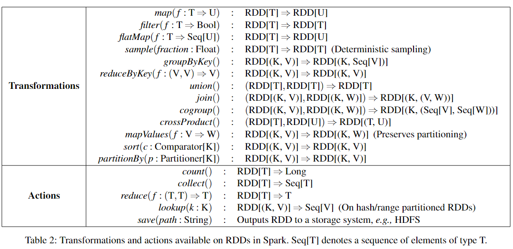
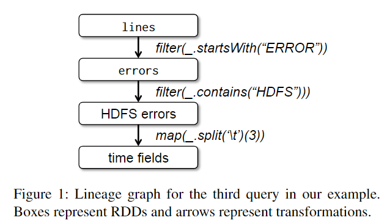
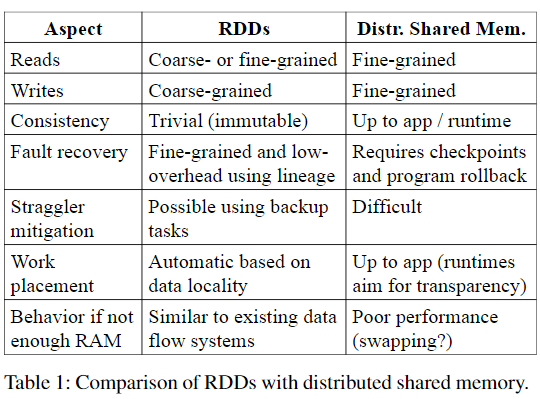
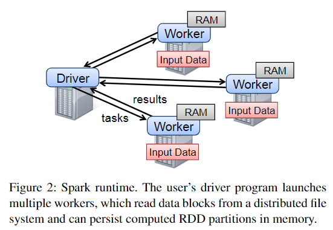
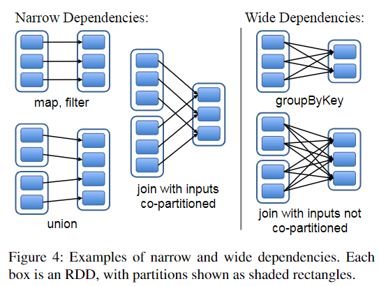
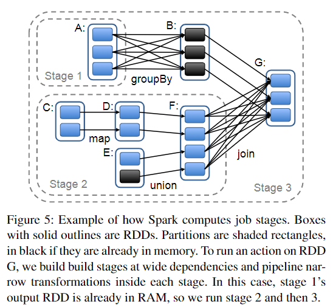

6.824 的第十一篇论文是 Spark——一个基于弹性分布式数据集(Resilient Distributed Dataset, RDD)的容错数据处理框架，能够帮助用户简单的开发快速，统一的大数据应用，对数据进行，协处理，流式处理，交互式分析等。
背景
大多数计算框架在处理需要重复使用中间结果的问题（如迭代机器学习和图算法）时，重用数据的唯一方法是将其写入外存，这会导致大量开销，从而效率低下。然而，当前能解决该问题的专用计算框架只支持特定的计算模式，却没有为更一般的数据重用提供抽象。
于是 RDD 被提出。这是一种容错的分布式内存抽象，它允许用户将中间结果保存在内存中以实现高效的数据重用，同时控制其分区以优化数据放置，并支持广泛的计算模式，从而提供高性能与高兼容性。
但 RDD 不太适合对共享状态进行异步细粒度更新的应用程序，例如 Web 应用程序的存储系统或增量 Web 爬虫。使用执行传统更新日志记录和数据检查点的系统更有效。
与之前的系统相比，RDD 提供了一个基于粗粒度变换(transformation, Trans)的接口，将相同的变换操作应用于多个数据项。只要记录下用于构建数据集的 Trans 操作，就能在一个分区丢失时很快地恢复数据，而无需进行昂贵的复制。容错性于是得到了保证。
RDD
RDD 本质上是一个只读且分区的记录集合。Spark 将 RDD 表示为对象，使用对象的方法来操作 RDD：
Transformation/Trans：基于持久化存储中的源数据或其他 RDD 派生出新的 RDD。如 map(), filter(), join()；
Actions/Acts：对 RDD 中的数据进行计算并将计算结果返回给上层或导出到存储系统。如 count(), collect(), save()；

Trans 不会触发 Spark；只有在首次进行 Acts 时，Spark 才真正开始运作并调度计算任务。这是典型的惰性计算。
read-only 属性决定了 RDD 只能通过通过 Trans 派生而来。RDD 会记录足够多的 Trans 信息（比如是从哪个 RDD 派生）， 即 Lineage，以便在分区丢失时进行数据恢复，且只恢复丢失的那个分区。而如果 RDD 丢失了 Lineage 信息，它将不能被任何程序调用。下图为一个包含 3 个 Trans 的 Lineage 图：

用户还可以控制 RDD 的另外两个方面：
- 持久性：用户可以调用 persist 方法来持久化 RDD 以重用。 Spark 默认将 RDD 持久化在内存中，但如果 RAM 不足，则会 split 到磁盘。通过修改 persist 方法中的 flag，用户还可以请求其他持久化策略。还可以在每个 RDD 上设置一个持久化优先级，以指定哪些内存中的数据应该首先 split 到磁盘；
- 分区：用户可以要求基于每条记录中的 key 将 RDD 的元素跨机器分区；
RDD 作为分布式内存抽象的优势

分布式共享内存(Distributed Shared Memory, DSM) 系统是一个非常通用的抽象，但是这种通用性使得在集群上难以实现高效和容错的方式。RDD 和 DSM 之间的区别在以下几点：
- RDD 只能通过粗粒度 Trans 来创建，这限制了 RDD 只能批量执行写入，但能通过 Lineage 实现更有效的容错；而 DSM 允许对每个内存位置进行读写，但一旦数据损坏，所有数据都要重新还原或重做；
- RDD 允许系统启动 backups 来并行执行慢节点的任务从而缓解短板；而在 DSM 中慢节点会拖累所有节点；
RDD 还有两大优势：
- 在 RDD 的批量操作中，可以通过物理上更近的节点调度任务以提高性能；
- 当没有足够的内存来存储 RDD 时，溢出的分区可以存储在磁盘上，并将提供与当前数据并行系统相似的性能；
Spark 集群
Spark 由 Driver 程序启动，并将任务分发至多个 Worker 节点。Driver 跟踪 RDD 的 Lineage；Worker 将 RDD 分区存储在 RAM 中。如下图所示：

RDD 表示
一个 RDD 由以下部分组成：
- 数据集的原子分区；
- 对父 RDD 的依赖；
- 基于父分区计算当前分区的 Trans 函数；
- 分区方案和数据地址相关的元数据。
RDD 依赖
RDD 在物理形式上是分区的，其完整数据被分散在集群内若干机器的内存上。在利用 Trans 进行派生时，根据 Trans 操作的不同， 子 RDD 会与父 RDD 产生不同依赖关系：
- Narrow Dependency：每个父分区最多生成一个子分区，如 map(), filter()；
- Wide Dependency：每个父分区能够生成多个子分区，而每个子分区可能都只依赖各个父分区中的一部分，如 groupBy(), join()。

进行上述区分有以下两点好处：
- 数据传输：Narrow Dependency 的每个父分区只会传入到一个子分区中，可以在一个节点内流水线式地完成转换；而 Wide Dependency 需要将父分区的数据传输到多个子分区中，往往有 shuffle 操作；
- 故障恢复：Narrow Dependency 下的节点故障后的恢复效率更高，且可以在不同的节点上并行进行；而在 Wide Dependency 中，单个故障节点需要多个分区联合执行恢复，且对父分区的重新计算会产生冗余数据；
任务调度

每当用户在 RDD 上运行 Acts 时，调度器(Scheduler)根据 Lineage 图与该 RDD 的依赖关系，对不同 Acts 过程的执行进行阶段(stage)划分，如上图所示。stage 的划分依据即宽窄依赖：从后往前，遇到宽依赖的 Acts 便进行划分。之后，Scheduler 便生成任务(task)并将其分配给不同节点。
task 的分配基于数据局部性。如果 task 需要的分区存储在某个节点的内存中，则将其发送到该节点；否则，将 task 发送给 RDD 指定的 preferred 节点。对于 WD，在持有父分区的节点上保存中间产物以加速故障恢复。
一旦 task 失败，只要它的父 RDD 仍然可用，Spark 就会在另一个节点上重新执行该 task。反之，则根据 Lineage 图重新生成父 RDD，随后再执行任务即可。目前 Spark 还不能容忍 Scheduler 的故障，所以一旦 Scheduler 挂了，所有的工作也白费了。
内存管理
Spark 为 RDD 持久化存储提供了三种方案：
- 内存中的反序列化 Java 对象：这提供了最快的性能，因为 JVM 可以在本地访问每个 RDD 元素；
- 内存中的序列化数据：这允许用户在空间有限时选择比 Java 对象图更节省内存的表示，但会降低性能；
- 磁盘存储：这对于那些太大而无法保存在 RAM 中但每次使用时重新计算成本高昂的 RDD 很有用；
当计算出一个新的 RDD 分区但没有足够的空间来存储它时，会使用 LRU 策略进行内存回收，以给新分区提供空间。除此之外，还可以通过设置每个 RDD 的持久性优先级提供进一步的控制。
检查点
前文提到 Lineage 可以有效进行故障恢复，但对于具有长 Lineage 链的 RDD 则容易耗费太多时间，无法体现较好性能。将一些 checkpoint 持久化到存储能很好的解决此问题。
一般来说，检查点对于 WD 的长 Lineage 图很有用，因为集群中的节点故障可能会导致每个父 RDD 丢失一些数据片段，需要完全重新计算。而对于对 ND 的 RDD，checkpoint 则没那么必要，如果一个节点发生故障，这些 RDD 中丢失的分区可以在其他节点上并行重新计算，而成本只是复制整个 RDD 的一小部分。
Spark 目前提供了一个用于检查点的 API，将决策权留给了用户，即 REPLICATE 标志。
rdd.persist(REPLICATE)RDD 的 read-only 性质使得它们比一般的共享内存更容易实现 checkpoint，因为一致性不是问题，RDD 可以在后台创建，而不需要程序暂停或分布式快照方案。
总结
RDD 是一种分布式内存抽象，允许用户将中间结果保存在内存中以实现高效的数据重用，同时支持广泛的计算模式。
RDD 利用了 Lineage 大大简化了节点失效后的数据恢复过程。